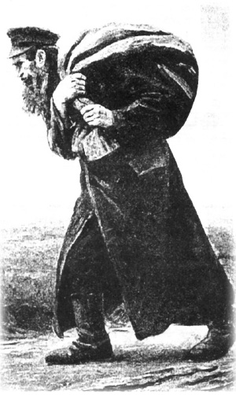

The “Goy” Who Helped the Baal Shem Tov Bring Flour to Bake Matza
A story about preparing for Pesach from the book “Sippur shel Chag – Chag Ha’Pesach.”

PART ITHE “GOY” WHO HELPED THE BAAL SHEM TOV BRING FLOUR TO BAKE MATZA A story about preparing for Pesach from the book “Sippur shel Chag – Chag Ha’Pesach.” By Menachem Ziegelboim PART I An old wooden hut stood on the side of the mountain, as though hiding in its shadow. Wherever you looked, the Carpathian Mountains extended in all their glory. The G-dly creation was visible in all its beauty. A young couple lived in this hut, a couple who had chosen to escape the bustle of city life. They had married just two months earlier and now they were building their lives in peace and quiet. The man’s name was Yisroel. As a child, he was called Yisroelik and when he became the leader of the Jewish people, he was known as Rabbi Yisroel Baal Shem Tov. Despite his young age, there was always a grave look to his mien. His eyes shone with a joyous sparkle and he radiated calm. His young wife Rochel was happy even though she hardly saw her husband. Throughout the week, Yisroelik left the house and wandered through the thick forests that were plentiful in the Carpathian Mountains. He would leave the house Sunday morning and return Friday afternoon, before Shabbos. Rochel was happy nonetheless, because she knew that her husband was a tzaddik, a scholar, and a holy man. Not many knew this. Actually, only she knew. Her husband concealed his ways from others, even from her brother, the great R’ Gershon of Kitov. R’ Gershon could not have imagined that his sister would do a shidduch like this. He had hoped with all his heart that he could marry her off to an outstanding G-d fearing Torah scholar, not a nobody who showed up one day at his house and showed him the engagement contract signed by R’ Gershon’s late saintly father. After a brief and modest meeting, the two agreed to marry one another. Having no choice, R’ Gershon accepted his sister’s decision. But in order not to be shamed before his congregation, he sent the young couple far away. He was happy that they had readily agreed to do so, and did not know that this was what his new brother-in-law actually wanted. Yisroelik walked among the mountains during the long summer, with the sun beating down, as well as in the snowy winter. He held a rough thick staff in his hand and had a small knapsack on his shoulder. The knapsack contained his tallis and t’fillin, a book or two, and bread. To support them, Rochel worked at various jobs, while her husband achieved heavenly spiritual heights in his isolation and holiness. No one was happier than her. PART II The snows began to melt and buds of spring began to appear here and there. Pesach was approaching but Yisroelik still had no matzos, nor meat. He harnessed his horse to a wagon and left for a neighboring village. He slaughtered an animal there and with the little money that he had, he bought wheat. He ground it and returned home with flour and meat for Pesach. When he arrived at his door, he said to his wife, “It would be a good idea to take the flour and meat inside and unhitch the horse.” He himself hurried to the hut where he would commune in solitude in his efforts to continue reaching ever greater spiritual heights. A few minutes went by and before his wife had taken the flour indoors, the skies became cloudy and it began to pour. She was devastated about the sack of flour which had become chametz. She knew that there was nothing else to do with it but bake regular bread. She rushed to tell her husband what happened. Yisroelik did not get upset. He accepted what happened and left again for one of the villages to obtain more wheat for matza. When he finished grinding, he loaded the heavy sack of flour on the wagon and left for home. He had a long journey ahead of him and the thin horse worked hard to pull the laden wagon behind him. The horse had done this many times before, but it seemed as though this time it wouldn’t make it. Yisroelik helped the horse and pushed the wagon from the rear, but the poor horse could not go on and died on the road. Yisroelik knew that human beings hardly ever came to these parts and having no choice, he had to continue pulling the wagon himself since he was afraid to leave the flour unguarded. At a certain point, he had no strength to go on and he stood near the wagon and cried bitterly. As he sobbed, he noticed a tall, impressive person approaching him. It was a distinguished looking Jew. Yisroelik realized that this was Eliyahu HaNavi who had come to help him. Eliyahu HaNavi looked at him with a smile on his face and said, “You should know that your tears are desirable and your prayers were accepted. I will immediately send you a goy who will take your wagon with the flour to your house.” Yisroelik instantly woke up and saw it had been a dream and that he had nodded off in his tears. A short time later, a burly goy appeared with a horse and wagon. The reputation of the young, odd fellow (Yisroelik) who wandered among the mountains was already known to the gentiles in the area and he said, “Srulche, tie your wagon to my wagon and I will bring you home.” The hefty fellow loaded the carcass of the horse on to the wagon and they set off. A short while later, the two of them arrived near the couple’s hut. When he arrived at the Baal Shem Tov’s hut, the goy said, “What will you give me if I skin the horse and give it to you?” The Baal Shem Tov gave him a gold coin worth 13 rubles. Shortly thereafter, another goy came to the Baal Shem Tov and bought the skin for four gold coins and said, “Try to purchase clothing for Yom Tov for you and your wife with this money.” The Baal Shem Tov knew that these gentiles were none other than emissaries of G-d to help him for Yom Tov. (Shivchei HaBaal Shem Tov)
Menachem Ziegelboim. "The “Goy” Who Helped the Baal Shem Tov Bring Flour to Bake Matza." Beis Moshiach, no. 923 (April 9, 2014).